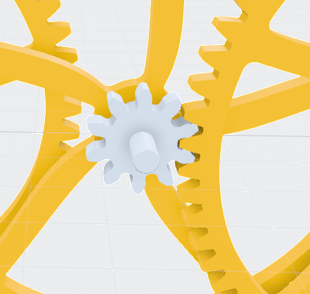

5. Transmission : Chaîne Cinématique & Structure du Mobile de la Montre
Ordre Cinématique : Barillet ➔ Roue de Centre ➔ Roue Moyenne ➔ Roue de Seconde ➔ Échappement
1
2
3
4
5
1 B — Barillet
2 C — Roue de centre
3 M — Roue moyenne
4 S — Roue de seconde
5 E — Pignon d'échappement
Structure d'un Mobile : Planche (laiton), Pignon (acier). Assemblage par chassage.
Taillage : Fraisage de forme (profil cycloïdal).
Traitement : Roulage des pivots pour durcissement superficiel.
📷 FEUILLET MANUSCRIT ORIGINAL (01-05) — Transmission & Mobiles
5.1 Étude Approfondie des Mobiles et de la Denture
L'analyse détaillée des organes de transmission met en lumière des impératifs géométriques et tribologiques stricts pour garantir un rendement énergétique optimal (généralement supérieur à 90 % par mobile).
5.1.1 Le Profil de Denture (Profil Cycloïdal)
Contrairement à la mécanique industrielle qui privilégie le profil de denture développante de cercle, l'horlogerie suisse utilise traditionnellement le profil cycloïdal (et particulièrement l'épicycloïde pour les dents de la roue et l'hypocycloïde pour les flancs du pignon). Ce choix répond à des contraintes spécifiques :

📷 MODÉLISATION 3D D'ATELIER — Vue rapprochée de l'engrènement : interaction géométrique entre les dents de la roue et le pignon.
Frottement réduit au minimum : L'engrènement cycloïdal minimise le glissement des surfaces au moment de l'attaque et du dégagement des dents. Il n'y a pas de contact sur la ligne de centres.
Tolérance au jeu d'engrènement : Les mobiles horlogers fonctionnent sans lubrification lourde sur les rouages intermédiaires ; le profil tolère de légères variations d'inter-axes sans bloquer le train.
5.1.2 Calculs Rigoureux des Rapports de Transmission
Pour garantir la rigueur de la chaîne cinématique, le calcul des rapports s'appuie sur le nombre exact de dents Z des roues et d'ailes des pignons N :
1° Calcul de la Réserve de Marche Théorique
Paramètres : Barillet = 84 dents | Pignon de centre = 12 dents | Tours utiles = 6.5
Rapport (i) = 84 / 12 = 7
Autonomie totale = 7 × 6.5 = 45.5 heures
2° Rapport Global : De la Roue de Centre à l'Échappement
Roue de centre → Pignon de troisième : 80 / 10 = 8
Roue de troisième → Pignon de quatrième : 75 / 10 = 7.5
Roue de quatrième → Pignon d'échappement : 70 / 7 = 10

.jpg)